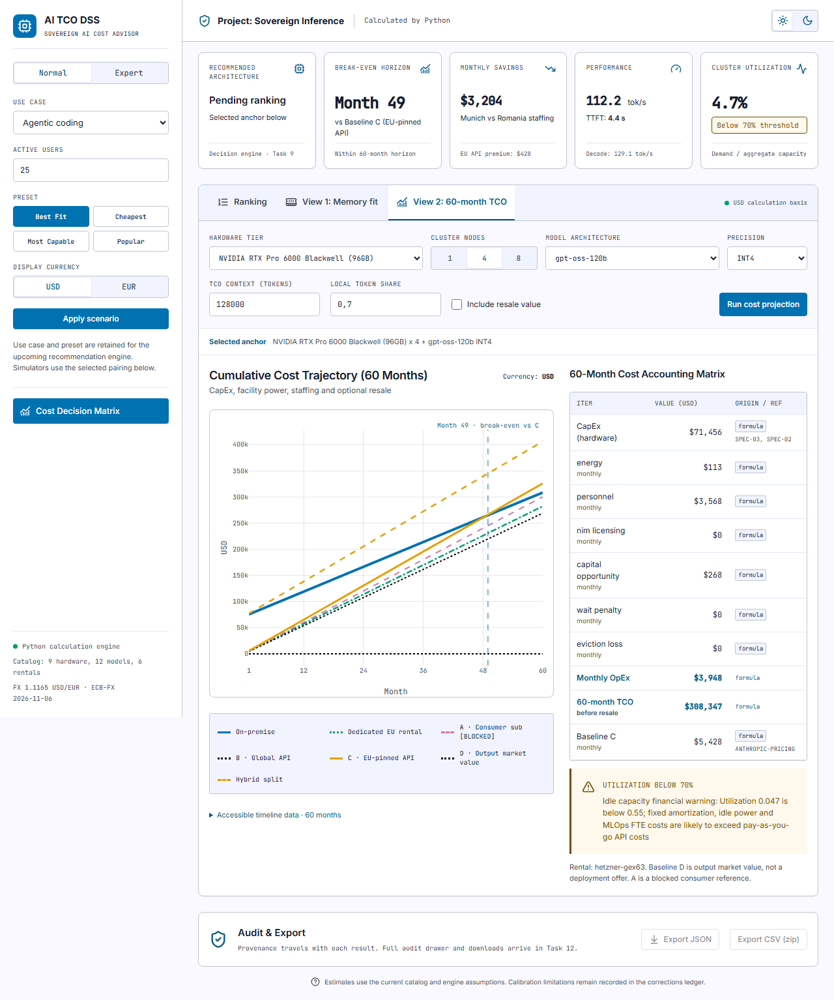
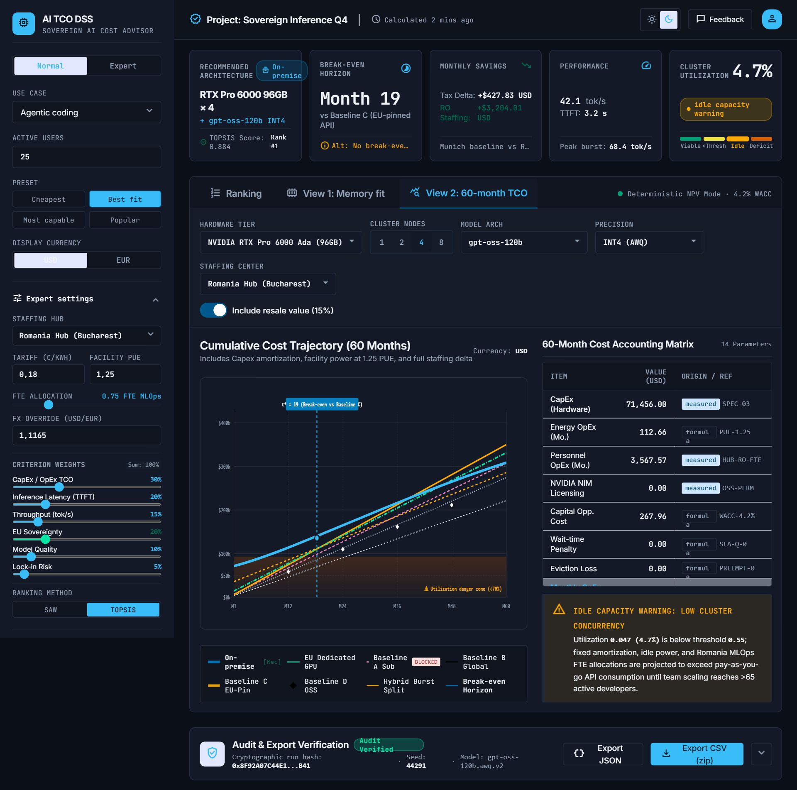
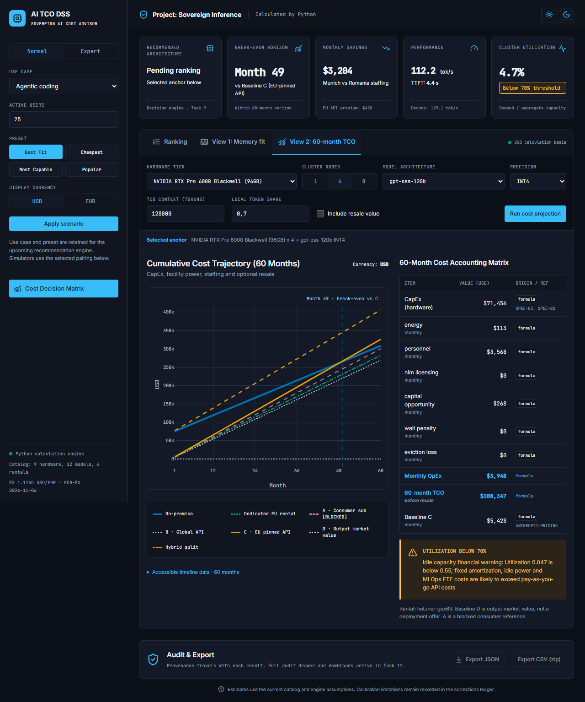
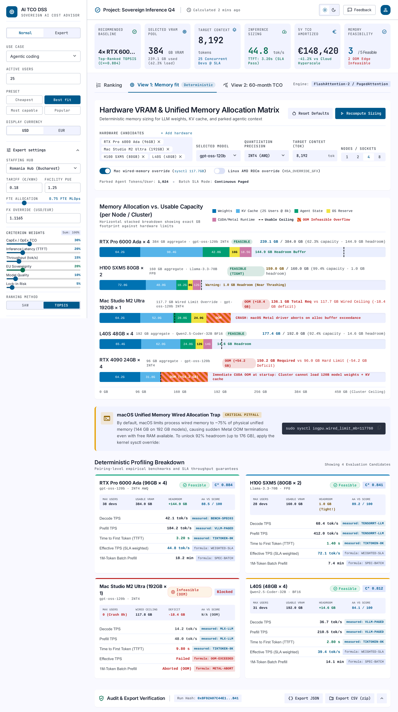
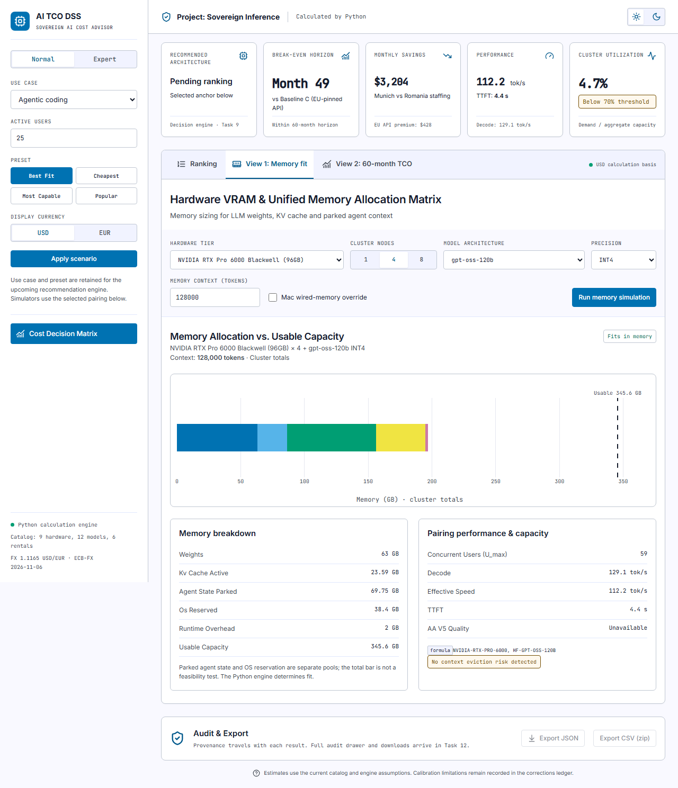

Left: canonical Stitch screenshot scaled to 1280 CSS px. Right: real Chromium DPR 1 output at 1280 CSS px. Live values and supported scope differ intentionally; see REVIEW.md. Open this file locally and scroll horizontally to compare the complete images.




